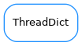

ThreadDict¶

-
class
ThreadDict(other=None, read_method=None, write_method=None, timewait=0.1, threaded=True)[source]¶ Bases:
dictThread safe dictionary with redefinable read/write methods and a background thread for hardware update. All methods are thread-safe using @self_lock decorator.
Note
any method decorated in this way CANNOT call other decorated methods! All values of the dictionary will be automatically updated in a separate Thread using read_method provided. Any value overwritten in the dict should launch the write_method.
Briefing:
a[2] equals to a[2]=read_method(2) a[2]=1 equals to a[2]=write_method(2,1)
-
copy(*args, **kwargs)¶
-
items(*args, **kwargs)¶
-
keys(*args, **kwargs)¶
-
pop(*args, **kwargs)¶
-
update(*args, **kwargs)¶
-
values(*args, **kwargs)¶
-